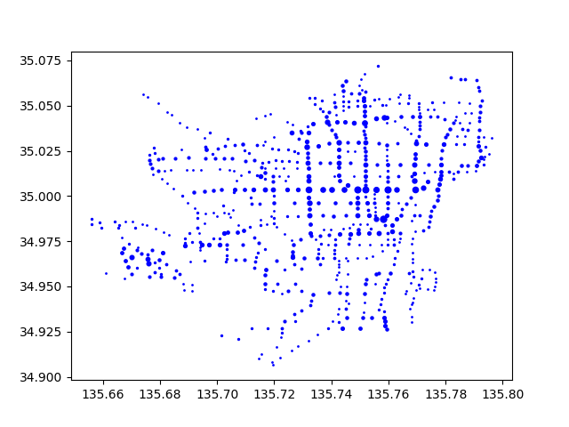

Week 2 (2024/4/12)¶
今週の目的
ファイルのデータからインスタンスを作成する。
今週のキーワード
- クラス
- インスタンス変数
- インスタンス生成
- メソッド、メソッド呼び出し
第１回課題のデータファイルを用いて、クラスのインスタンスを生成し、各インスタンスのインスタンス変数の値を表示するプログラムを作成する。
今回作成するStopクラスの仕様は、以下の通りである。
Stopクラス
class Stop(id, name, lat, lng)
バス停の情報（バス停ID、バス停の名称、バス停の緯度、経度）を格納するためのクラス
パラメータ
- id: バス停ID（文字列）
- name: バス停の名称（文字列）
- lat: バス停の緯度（浮動小数点）
- lng: バス停の経度（浮動小数点）
課題1：インスタンスを作る¶
4つのStopクラスのインスタンスを生成するよう、下のプログラムの穴あき部分を埋めて模写し、実行例の通りに動くことを確認せよ。
課題2：インスタンス変数を追加する¶
Stopクラスの定義に、バスの路線を格納するリスト型のインスタンス変数routesを追加せよ。また、kyotocitybus_stop.datファイルから読込んだ各バス停のデータ（名前、ID、緯度、経度、バスの路線）を使ってStopクラスのインスタンスを生成しなさい。
さらに、最後から100番目のバス停のデータを表示するようプログラムを修正し、実行例の通りに動くことを確認せよ。読込むデータファイルは前回と同じkyotocitybus_stop.datを用いること。
ファイルの1列目はバス停ID、2列目はバス停の名称、3列目はバス停の緯度、4列目はバス停の経度、5列目以降はそのバス停に停まるバスの路線である。
ヒント
第１週の課題１を参考にしてファイルからデータを読み込み、各バス停のデータを標準出力していた箇所でStopクラスのインスタンスを生成しよう。ただし、ファイルから読み込んだデータは全て文字列であることに注意して、 Stopインスタンスを生成するときは、文字列を適切な型に変換しておくこと。また、生成したStopインスタンスをリストに追加しておくと、最後から100番目のバス停のデータにアクセスしやすくなる。なお、リストの最後の要素にアクセスするには、インデックスに-1を指定すればよい。また、バス路線のリストroutesをコンマ区切りで連結するには、文字列のjoin()メソッドを用いるとよい。
課題3：メソッドを追加する¶
各バス停に停まる路線の本数を返すcount_routes()メソッドをStopクラス内に定義しなさい。
今回作成するcount_routesメソッドの仕様は、以下の通りである。
count_routesメソッド
count_routes()
バス停に停まる路線の本数を返すメソッド
返り値
- 停車する路線の本数（整数）
ヒント
路線の本数を数えるには、len関数を用いてインスタンス変数routesのリストの長さを求めればよい。
さらに、最後から500番目のバス停に停車するバスの路線の本数を表示するようプログラムを修正し、実行例の通りに動くことを確認せよ。
発展課題4：散布図でデータを表示する¶
Stopインスタンスのリストを用いて、各バス停の経度（lng）をx座標に、緯度（lat）をy座標にプロットして散布図を作成し表示しなさい。また、バス停に停車するバスの路線の本数に応じてプロットしたマーカの色を変えて、実行例の通りに表示されることを確認せよ。
ヒント
散布図を作成するにはmatplotlib.pyplotのscatter関数を用いよう。第一引数にx座標のデータ(列)、第二引数にy座標のデータ(列)を与える。また、プロットするデータのサイズはキーワード付き引数sにそのサイズの大きさを表すデータ(列)を与える。今回の場合は、第一引数に各バス停の経度lng、第二引数に各バス停の緯度lat、キーワード付き引数sに各バス停のcount_routes()の値を用いればよい。
scatter関数
matplotlib.pyplot.scatter(x, y, c=None)
散布図を作成する関数
パラメータ
- x: データのx座標の値/リスト
- y: データのy座標の値/リスト
- s: データのマーカーのサイズの値/リスト
使用例
import matplotlib.pyplot as plt
plt.scatter(3, 4, s=5)
plt.scatter([1, 2, 3], [3, 2, 1], s=[1, 2, 3])
plt.show()
APIの詳細は公式のページを参照すること。
